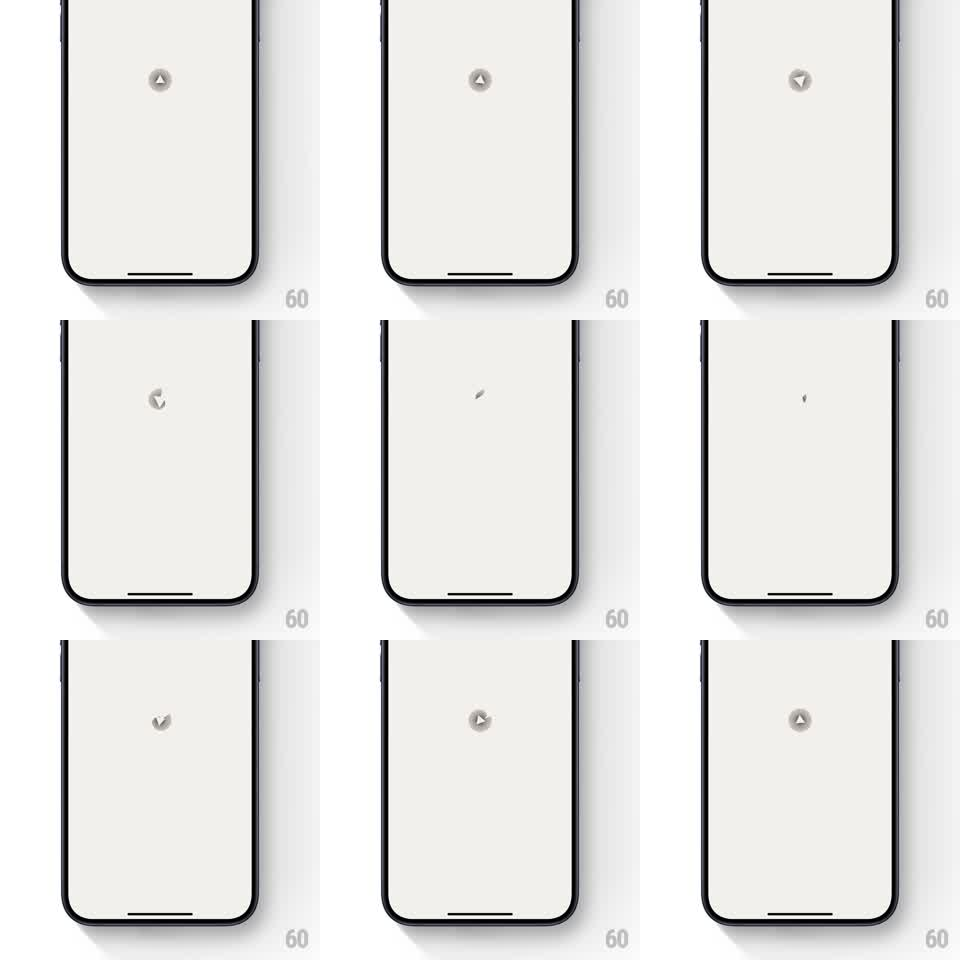

Media
Frame-by-frame

Rebuild this animation 1:1: Spoil Me's loading loop - a small geometric logo on cream that rotates, disassembles into fluid line fragments, and reforms, endlessly.

Rebuild this animation 1:1: Spoil Me's loading loop - a small geometric logo on cream that rotates, disassembles into fluid line fragments, and reforms, endlessly. ## Integration Integration: stack-agnostic spec - springs given as stiffness/damping, timed motions as duration + curve; map every value to your framework and animation library of choice. ## Scene Warm cream screen, perfectly empty except a small gray geometric mark at center: a triangle-in-circle glyph. Over the loop the mark rotates, breaks into arcs and line segments that orbit, then snaps back into the glyph. ## Motion spec Pattern: rotate-disassemble-reform loading loop. - Assembled hold (~400ms): the glyph sits still, centered. - Break (~500ms, ease-in): the glyph's strokes pull apart into 3-4 fragments that arc outward along small orbital paths, each rotating as it travels. - Orbit (~700ms, linear): the fragments spin loosely around the center, passing through minimal nearly-invisible states. - Reform (~500ms, ease-out with a soft spring settle, stiffness ~350, damping ~22): fragments fly back and click into the glyph. - Total loop ~2.1s, repeating seamlessly - the last frame and first frame match exactly. ## Calibration - The mark stays small (~24px) and quiet gray; a loading indicator should never shout. - Fragment paths are circular arcs, not straight lines - straight paths read as a glitch. ## Reduced motion A simple opacity pulse (0.3 to 1.0, 1.2s) on the assembled glyph. ## Don't miss - The loop's seam is invisible: reform lands exactly on the assembled hold pose. - No spinner ring, no progress bar - the disassembly IS the indicator.